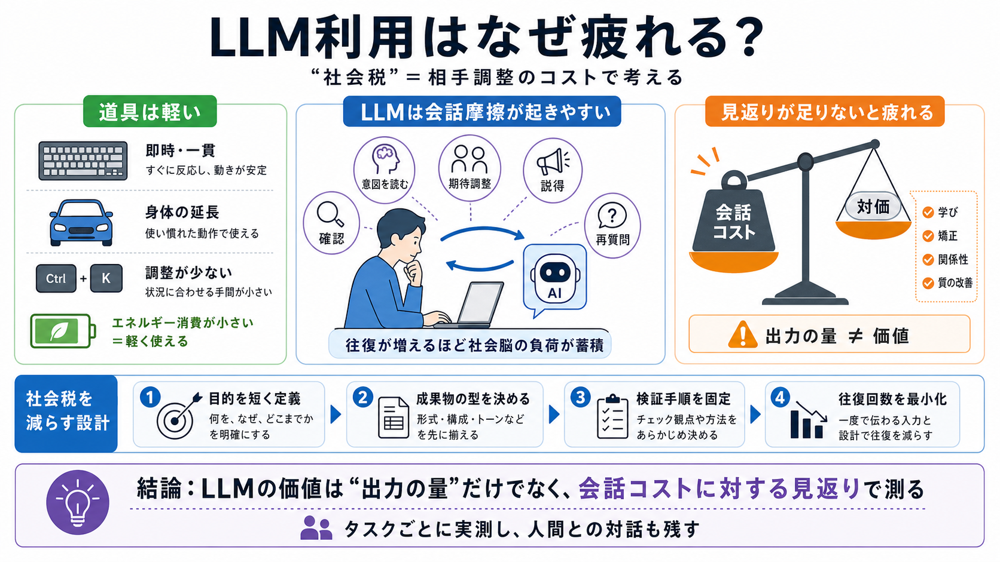

Social Psychology Is Looking at LLMs Wrong - Pancakes? WTF?
The first is using LLMs as tools — automating coding, generating stimuli, speeding up analyses. · The second is studying…

読み物の地図（社会エネルギー）
社会税が発生する
ツール魔法 vs 会話摩擦
比べる軸は“対価”
成果が“増えるだけ”
全面否定ではない
FAQ：社会税とは？
FAQ：必ず？減らす？
批判的に読む
設計し直す（実務手順）
要点を一言で（心理/実務/社会…）
結論：見返りが足りないと疲れる
The first is using LLMs as tools — automating coding, generating stimuli, speeding up analyses. · The second is studying…
# Large Language Models Do Not Simulate Human Psychology. Large Language Models (LLMs), such as ChatGPT, are increasingl…
Overview of talk: Large Language Models (LLMs) have remarkable and completely unexpected capacities: they can chat with …
LLMs, designed to be helpful and to understand nuanced human communication, can be led using social-engineering techniqu…
* [Abstract](https://www.frontiersin.org/journals/communication/articles/10.3389/fcomm.2025.1572947/full#h1). * [1 …